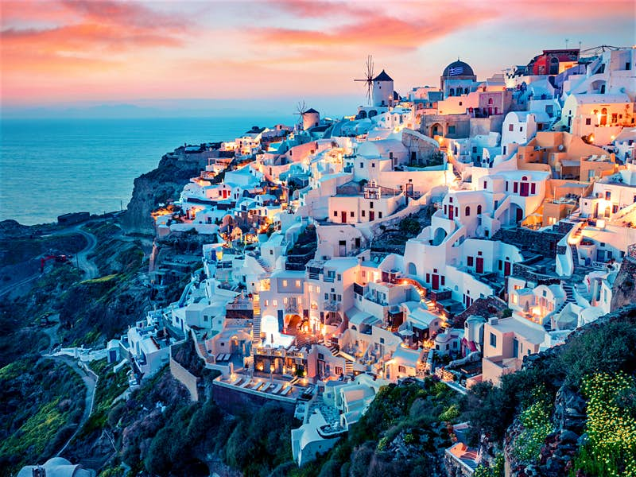

Santorini, Greece

If you are not a fan of animals, a more suitable travel destination might be Santorini.
The island formed after a volcanic eruption in seventeenth century B.C.. Santorini showcases breathtaking views, phenomenal food,
and luxurious hotels. In addition, there are ten beaches on the island and numerous hiking trails.
Metaxy Mas, Cava Alta, and Argo are only a few of the popular restaurants on this island. All in all, visiting
Santorini is an unforgettable experience.